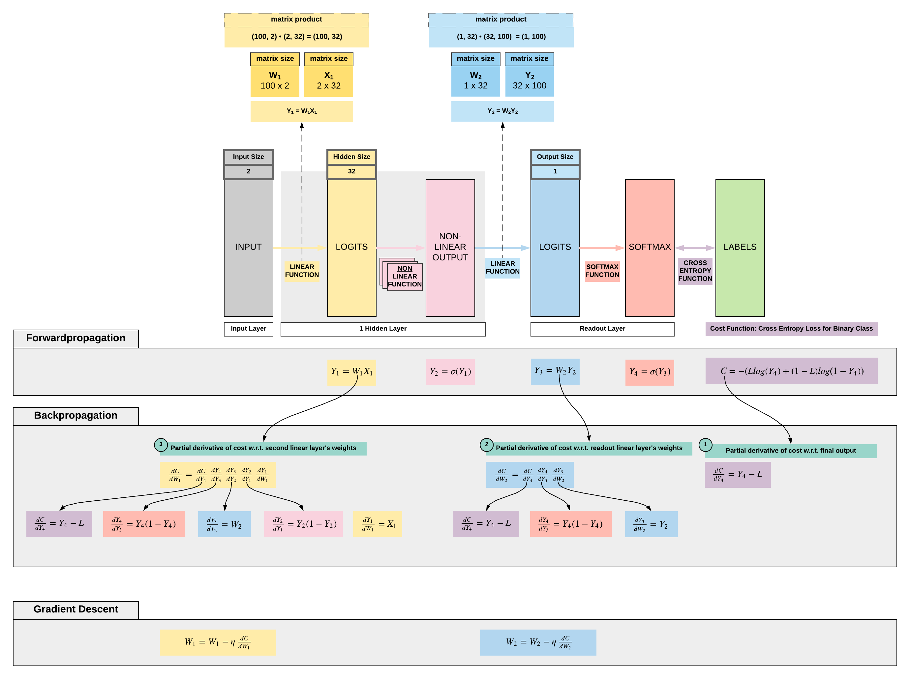

Forwardpropagation, Backpropagation and Gradient Descent with PyTorch¶
Run Jupyter Notebook
You can run the code for this section in this jupyter notebook link.
Transiting to Backpropagation¶
- Let's go back to our simple FNN to put things in perspective
- Let us ignore non-linearities for now to keep it simpler, but it's just a tiny change subsequently
- Given a linear transformation on our input (for simplicity instead of an affine transformation that includes a bias): \hat y = \theta x
- \theta is our parameters
- x is our input
- \hat y is our prediction
- Then we have our MSE loss function L = \frac{1}{2} (\hat y - y)^2
- We need to calculate our partial derivatives of our loss w.r.t. our parameters to update our parameters: \nabla_{\theta} = \frac{\delta L}{\delta \theta}
- With chain rule we have \frac{\delta L}{\delta \theta} = \frac{\delta L}{\delta \hat y} \frac{\delta \hat y}{\delta \theta}
- \frac{\delta L}{\delta \hat y} = (\hat y - y)
- \frac{\delta \hat y}{\delta \theta} is our partial derivatives of y w.r.t. our parameters (our gradient) as we have covered previously
- With chain rule we have \frac{\delta L}{\delta \theta} = \frac{\delta L}{\delta \hat y} \frac{\delta \hat y}{\delta \theta}
Forward Propagation, Backward Propagation and Gradient Descent¶
- All right, now let's put together what we have learnt on backpropagation and apply it on a simple feedforward neural network (FNN)
- Let us assume the following simple FNN architecture and take note that we do not have bias here to keep things simple
- FNN architecture
- Linear function: hidden size = 32
- Non-linear function: sigmoid
- Linear function: output size = 1
- Non-linear function: sigmoid
- We will be going through a binary classification problem classifying 2 types of flowers
- Output size: 1 (represented by 0 or 1 depending on the flower)
- Input size: 2 (features of the flower)
- Number of training samples: 100
- FNN architecture

Load 3-class dataset
We want to set a seed to encourage reproducibility so you can match our loss numbers.
import torch import torch.nn as nn # Set manual seed torch.manual_seed(2)
Here we want to load our flower classification dataset of 150 samples. There are 2 features, hence the input size would be 150x2. There is no one-hot encoding so the output would not be a size of 150x3 but a size of 150x1.
from sklearn import datasets from sklearn import preprocessing iris = datasets.load_iris() X = torch.tensor(preprocessing.normalize(iris.data[:, :2]), dtype=torch.float) y = torch.tensor(iris.target.reshape(-1, 1), dtype=torch.float)
print(X.size()) print(y.size())
torch.Size([150, 2]) torch.Size([150, 1])
From 3 class dataset to 2 class dataset
We only want 2 classes because we want a binary classification problem. As mentioned, there is no one-hot encoding, so each class is represented by 0, 1, or 2. All we need to do is to filter out all samples with a label of 2 to have 2 classes.
# We only take 2 classes to make a binary classification problem X = X[:y[y < 2].size()[0]] y = y[:y[y < 2].size()[0]] ```` ```python print(X.size()) print(y.size())
torch.Size([100, 2]) torch.Size([100, 1])
Building our FNN model class from scratch
class FNN(nn.Module): def __init__(self, ): super().__init__() # Dimensions for input, hidden and output self.input_dim = 2 self.hidden_dim = 32 self.output_dim = 1 # Learning rate definition self.learning_rate = 0.001 # Our parameters (weights) # w1: 2 x 32 self.w1 = torch.randn(self.input_dim, self.hidden_dim) # w2: 32 x 1 self.w2 = torch.randn(self.hidden_dim, self.output_dim) def sigmoid(self, s): return 1 / (1 + torch.exp(-s)) def sigmoid_first_order_derivative(self, s): return s * (1 - s) # Forward propagation def forward(self, X): # First linear layer self.y1 = torch.matmul(X, self.w1) # 3 X 3 ".dot" does not broadcast in PyTorch # First non-linearity self.y2 = self.sigmoid(self.y1) # Second linear layer self.y3 = torch.matmul(self.y2, self.w2) # Second non-linearity y4 = self.sigmoid(self.y3) return y4 # Backward propagation def backward(self, X, l, y4): # Derivative of binary cross entropy cost w.r.t. final output y4 self.dC_dy4 = y4 - l ''' Gradients for w2: partial derivative of cost w.r.t. w2 dC/dw2 ''' self.dy4_dy3 = self.sigmoid_first_order_derivative(y4) self.dy3_dw2 = self.y2 # Y4 delta: dC_dy4 dy4_dy3 self.y4_delta = self.dC_dy4 * self.dy4_dy3 # This is our gradients for w1: dC_dy4 dy4_dy3 dy3_dw2 self.dC_dw2 = torch.matmul(torch.t(self.dy3_dw2), self.y4_delta) ''' Gradients for w1: partial derivative of cost w.r.t w1 dC/dw1 ''' self.dy3_dy2 = self.w2 self.dy2_dy1 = self.sigmoid_first_order_derivative(self.y2) # Y2 delta: (dC_dy4 dy4_dy3) dy3_dy2 dy2_dy1 self.y2_delta = torch.matmul(self.y4_delta, torch.t(self.dy3_dy2)) * self.dy2_dy1 # Gradients for w1: (dC_dy4 dy4_dy3) dy3_dy2 dy2_dy1 dy1_dw1 self.dC_dw1 = torch.matmul(torch.t(X), self.y2_delta) # Gradient descent on the weights from our 2 linear layers self.w1 -= self.learning_rate * self.dC_dw1 self.w2 -= self.learning_rate * self.dC_dw2 def train(self, X, l): # Forward propagation y4 = self.forward(X) # Backward propagation and gradient descent self.backward(X, l, y4)
Training our FNN model
# Instantiate our model class and assign it to our model object model = FNN() # Loss list for plotting of loss behaviour loss_lst = [] # Number of times we want our FNN to look at all 100 samples we have, 100 implies looking through 100x num_epochs = 101 # Let's train our model with 100 epochs for epoch in range(num_epochs): # Get our predictions y_hat = model(X) # Cross entropy loss, remember this can never be negative by nature of the equation # But it does not mean the loss can't be negative for other loss functions cross_entropy_loss = -(y * torch.log(y_hat) + (1 - y) * torch.log(1 - y_hat)) # We have to take cross entropy loss over all our samples, 100 in this 2-class iris dataset mean_cross_entropy_loss = torch.mean(cross_entropy_loss).detach().item() # Print our mean cross entropy loss if epoch % 20 == 0: print('Epoch {} | Loss: {}'.format(epoch, mean_cross_entropy_loss)) loss_lst.append(mean_cross_entropy_loss) # (1) Forward propagation: to get our predictions to pass to our cross entropy loss function # (2) Back propagation: get our partial derivatives w.r.t. parameters (gradients) # (3) Gradient Descent: update our weights with our gradients model.train(X, y)
Epoch 0 | Loss: 0.9228229522705078 Epoch 20 | Loss: 0.6966760754585266 Epoch 40 | Loss: 0.6714916229248047 Epoch 60 | Loss: 0.6686137914657593 Epoch 80 | Loss: 0.666690468788147 Epoch 100 | Loss: 0.6648102402687073
Our loss is decreasing gradually, so it's learning. It has a possibility of reducing to almost 0 (overfitting) with sufficient model capacity (more layers or wider layers). We will explore overfitting and learning rate optimization subsequently.
Summary¶
We've learnt...
Success
- The math behind forwardpropagation, backwardpropagation and gradient descent for FNN
- Implement a basic FNN from scratch with PyTorch
Citation¶
If you have found these useful in your research, presentations, school work, projects or workshops, feel free to cite using this DOI.